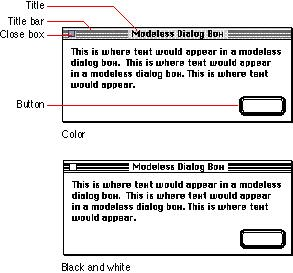
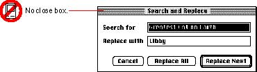

|
Modeless Dialog Box AppearanceModeless dialog boxes look like basic document windows. A modeless dialog box has a title bar that displays its title, which should be the same as the name of the menu item that displays it. If that item includes an ellipsis character, don't include it in the title of the dialog box.Figure 6-4 shows the appearance of a modeless dialog box. Figure 6-4 The essential elements of a modeless dialog box  Modeless dialog boxes have the same behaviors as document windows--that is, the user manipulates them in the same way. For example, the user closes a modeless dialog box by using the close box or the Close command in the File menu. If you support keyboard equivalents for menus, support Command-W to close modeless dialog boxes as well as windows. A modeless dialog box always has a close box; don't implement buttons to make the window disappear. The user expects that modeless dialog boxes stay on the screen until he or she explicitly dismisses them with the close box, not when he or she clicks a button in the dialog box. Using a button to close a modeless dialog box also confuses the distinction between modeless dialog boxes and modal dialog boxes. Further, a modeless dialog box without a close box looks similar to a movable modal dialog box, thereby creating more confusion. Figure 6-5 shows a modeless dialog box that is missing its close box. Figure 6-5 Incorrect absence of a close box in a modeless dialog box  If the user activates another window while a modeless dialog box is open, the window appears in front of the dialog box. |